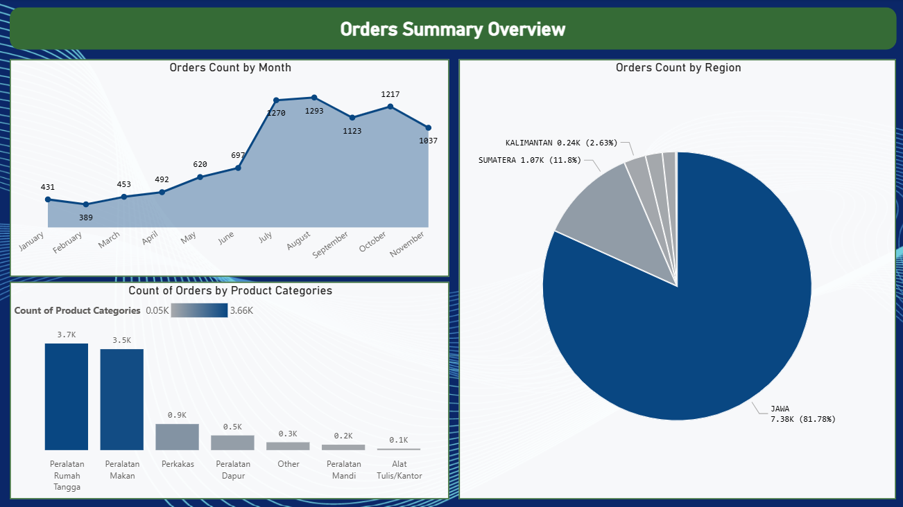
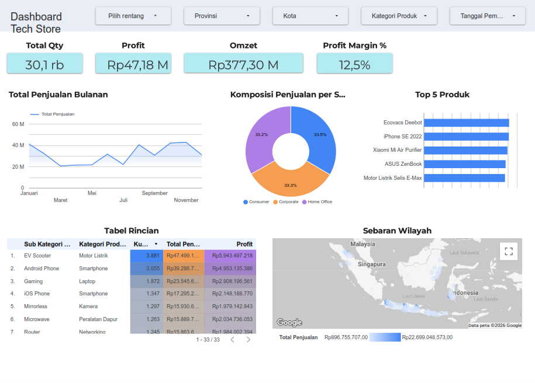

1. Coffee Shop Sales Analysis
Python
Pandas
NumPy
Seaborn
Matplotlib
Jupyter Notebook
Melakukan analisis eksploratif mendalam terhadap dataset transaksi penjualan kedai kopi. Fokus pada pembersihan data, rekayasa fitur waktu, serta visualisasi tren penjualan harian, produk terlaris, dan jam operasional sibuk untuk mendukung pengambilan keputusan bisnis.
Lihat Detail2. E-Commerce Performance Dashboard
Microsoft Power BI
Data Visualization
Membangun dashboard analitik komprehensif untuk memonitor metrik utama e-commerce seperti Total Revenue, tingkat retensi pengguna, dan analisis perilaku pembelian secara visual dan interaktif.
Lihat Detail
3. TechStore Sales Analysis
Microsoft Excel
Feature Engineering
Looker Studio
Analisis data komprehensif pada lini produk dan transaksi TechStore. Menyoroti proses manipulasi data, identifikasi pola pembelian pelanggan terhadap produk teknologi, serta penyajian wawasan berbasis data secara terstruktur.
Lihat Detail